出雲空港の空の日イベント
2014/09/23
出雲縁結び空港で空の日イベントをやっていました。
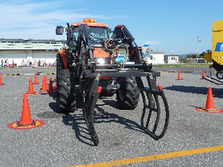
変わった乗り物ですね。
空港にある普段見ない機械が展示してありました。
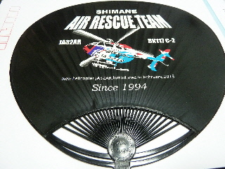
今日は天気が良く、暑かったのでウチワをもらいました。
黒いウチワってなんか渋いです。
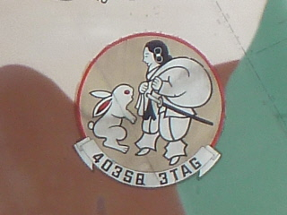
白兎マークのついた自衛隊の飛行機がいました。
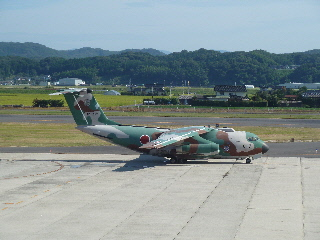
C1輸送機ですね。
ちょうど帰るところを見ることが出来ました。
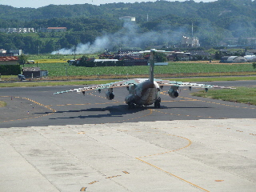
ジャンボよりも全然小さいんですが、なにか威圧感がありました。
この後、キーーーーンと音を立てながら、少し黒い煙を出しながら飛んで行きました。
飛行機に乗って旅行に行きたいなー。
出雲空港のプレゼントが当たりました。
2013/09/05
出雲空港の夏まつりで応募したプレゼントが当たりました。
やった！
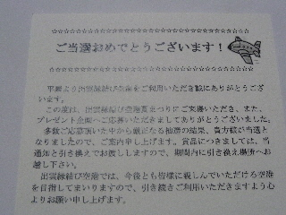
当たったのは、縁結びしまねっこ ミニチュアマグネットです。
ありがとうございます。
引き換え期間が平成26年1月31日までなので、それまでに受け取りに行こうと思います。
出雲空港の夜市に行きました。
2013/08/24
出雲縁結び空港で、今日は夏まつりです。
夜市があるって事で、夜に行ってみました。
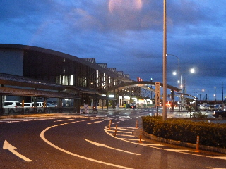
でも夜はあんまり人いないかなー。
子供向けイベントなので、早い時間の方が賑わっていたかもしれませんね。
屋台が出てたんですが、片づけしてるお店もありました。
でもフライトシュミレーターのゲームのところは待ち時間30分で人気がありました。
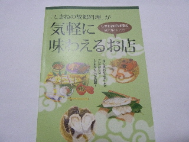
空港でいいもの見つけました。
飲食店のガイド本です。
100ページもある、しっかりしたガイド本が無料で置いてありました。
今後のお出かけの参考にさせてもらいます。
出雲空港で空の日まつりでした。
2011/10/01
出雲えんむすび空港は空の日まつりでした。
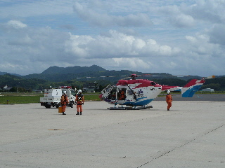
以前に見に行った時のヘリのデモンストレーションは、離陸してぐるっと回って着陸するだけのシンプルなものだったんですが、今回は見ごたえがありました。
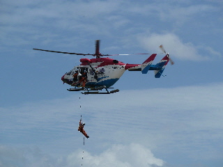
ヘリから人が降りたり、地上から人を救助してヘリに乗せる作業が見れました。
短時間にいろいろあったので、飽きずに見れました。
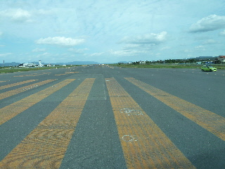
今回は事前応募の空港バス見学が当選していたので、バスで滑走路を案内してもらいました。
普段出来ない事が出来るのっていいですね。
空港の設備の説明や、表示してある数字の意味なんかを教えてもらいました。
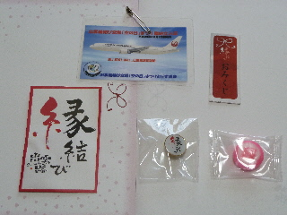
プレゼントをもらって帰りました。
今日は空港に島根のキャラ「しまねっこ」が歩いていました。結構なスピードで進むんですね。写真、握手って思ったんですが、タイミングを逃してしまいました。
出雲縁結び空港でもらった絵馬
2011/05/28
出雲空港で食事をしらたもらえた絵馬です。（限定です）
大きいほうは神社に奉納して、小さい方はお土産にどうぞってことらしいです。
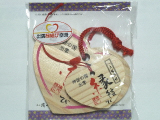
両方持って帰っちゃったので、また奉納に行かないといけないですね。
空港のレストラン2店（八雲と健菜厨房）で貰えるので、、そこの会社か空港が作ったのっかと思ったんですが、湯元湯の川が作っているんですね。
空港以外でも手に入るかもしれないですね。
出雲空港の空の日
2009/09/20
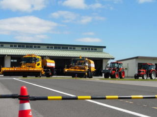
秋の連休（シルバーウィーク）と重なったので、出雲空港の駐車場は空港利用の人と、イベントを楽しみに来た人でいっぱいでした。大荷物の人が遠くの駐車から歩いて移動してるのはちょっと可愛そうでした。
見慣れない車が並んでたり、3F送迎デッキの入場料が無料になってたり、イベントが色々ありました。